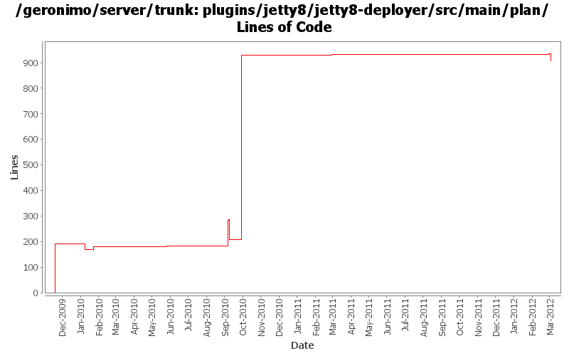

[root]/plugins/jetty8/jetty8-deployer/src/main/plan

| Author | Changes | Lines of Code | Lines per Change |
|---|---|---|---|
| Totals | 16 (100.0%) | 1161 (100.0%) | 72.5 |
| djencks | 8 (50.0%) | 1137 (97.9%) | 142.1 |
| gawor | 2 (12.5%) | 12 (1.0%) | 6.0 |
| xuhaihong | 3 (18.8%) | 5 (0.4%) | 1.6 |
| genspring | 2 (12.5%) | 4 (0.3%) | 2.0 |
| vamsic007 | 1 (6.3%) | 3 (0.3%) | 3.0 |
GERONIMO-6292 Share the japser servlet between jasper plugin and web-container plugin.
0 lines of code changed in 1 file:
GERONIMO-6290 Explicitly import javax.servlet packages
5 lines of code changed in 1 file:
GERONIMO-6204 Decouple OpenWebBeans from web container
0 lines of code changed in 1 file:
GERONIMO-5887 NPE in WebBeansContext init process when starting geronimo jetty bulid
---temp solution to force jetty to wire deployed web app with openwebbeans-impl so that it could search "META-INF\openwebbeans\openwebbeans.properties" to get securityService impl class"
1 lines of code changed in 1 file:
enable wink in jetty build for now.
3 lines of code changed in 1 file:
GERONIMO-5624 better default web app merging, and make jetty use more of the info tree
765 lines of code changed in 1 file:
GERONIMO-5621 use our patched jsp servlet for now
1 lines of code changed in 1 file:
GERONIMO-5567 clean up unused classes and code
0 lines of code changed in 1 file:
GERONIMO-5567 fix some more integration issues with Registration based web.xml processing. Functional but needs cleanup.
1 lines of code changed in 1 file:
GERONIMO-5222 Add support for application validation descriptor support for deployed applications
o Hook the module builder extension to jetty deployer.
3 lines of code changed in 1 file:
GERONIMO-5567 rewrite jetty integration to use a openejb-like info tree and the *Registration interfaces. This gets everything started in the right order and is a lot simpler. Old code still needs to be removed
176 lines of code changed in 1 file:
GERONIMO-5177 introduce sub-modules to allow deploying ejbs, rars, etc as parts of wars, ejbs, clients, etc. First draft
3 lines of code changed in 1 file:
some environment information i forgot to put back
12 lines of code changed in 1 file:
add DelegatingBundle that can delegate calls to multiple Bundles and remove classSource support
0 lines of code changed in 1 file:
GERONIMO-5021 allow gbean classes to be loaded from another plugin, plus use in jetty and jasper
1 lines of code changed in 1 file:
rename jetty7 to jetty8
190 lines of code changed in 1 file: